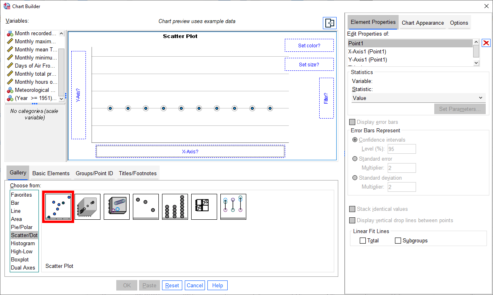

correlation and regression in spss
The purpose of this practical is to continue introducing you to SPSS, and complement the theoretical material presented in the lectures, discussions, and reading material. The experience gained in analyzing and presenting data should also help you continue to develop your confidence in using, presenting, and discussing numerical results.
In this practical, we will take a step beyond the basics of importing data into SPSS, calculating descriptive statistics, and creating plots. We will see how we can compare different subsets of our data, calculate trends using linear regression, and how we can analyze those results.
Warning
The material covered in this practical assumes that you have worked through the lecture material and reading from Week 6, where we introduce topics like correlation and regression.
If you have not worked through this material yet, you might have a difficult time answering some of the questions.
getting started
Warning
If you have not yet completed all the steps from the Week 6 practical, you should stop here and make sure that you finish them.
To get started, open SPSS using either the Start menu (Start > IBM SPSS Statistics > IBM SPSS Statistics), double-click the desktop icon (if it exists), or click on the taskbar icon (if it exists).
Note
If you are working on the lab computer, you will need to download the .sav and .spv files that you worked with last week so that you can start from where you left off.
When SPSS launches, you should see the normal welcome screen:

To open your previous files, you may need to click on the Recent Files tab. Then, click on
Open another file, followed by Open.

Browse to where you have saved your .sav file, and open it:

You can also open the .spv file from the File menu (File > Open > Output), then browsing to
where you have saved it:

Note
If at any point you accidentally close the Viewer window, this is one way that you can re-open it.
creating a date variable
Most software programs that you will encounter have a special way of handling dates, to make it possible to compute the amount of time that has passed between different dates and times, or to do other calculations involving dates and time.
SPSS is no exception,
so if we want to be able to make plots of variables over time, we will need to convert our Year/Month variables
into a Date variable.
From the Transform menu, select Date and Time Wizard. This will open the following dialog:

Select Create a date/time variable from variables holding parts of dates or times, then click Next:

In this step, we tell SPSS what variables correspond to what parts of the Date variable we want to calculate.
Note that we don’t have to fill all of these out - because we only have Month and Year variables, those are
what we need to set. So, highlight Year in the Variables box, then click the arrow button next to Year. Do
the same for Month, so that the dialog looks like this:

Now, click Next. This is where we set the name and label of the new variable (Date and
“Date measurement was recorded”), and select the Output Format - how we want the date to be displayed.
Select the yyyy/mm/dd format - when we create the new variable, the first value should look like 1853/01/01/, for 01 January 1853. Click Finish to create the new variable:

If you like, you can re-arrange the variable order in the Variable View tab of the Data Editor
window so that the Date variable is at the top. If not, move on to the next section.
scatter plots in spss
Note
For this section, make sure that you have Split the file based on meteorological season. If you aren’t sure how to do this, you can refer to last week’s practical for a refresher.
We can create a scatter plot in SPSS in the same way that we created histograms and bar charts last week. The instructions below will show this using the Chart Builder, but you can also use the Legacy Dialogs (Graphs > Legacy Dialogs > Scatter/Dot).
To start, open the Chart Builder (Graphs > Chart Builder). Under Gallery in the lower left corner, select Scatter/Dot, then select Scatter Plot by double-clicking on the icon (red outline):
{kind=link}
In this part of the practical, we’re going to look at the relationship between the number of hours of sun in a
given month (the Sun variable) and the monthly mean temperature (Tmean), using Sun as the explanatory
variable, and Tmean as the response variable.
To do this, click and drag the Sun variable to the X-Axis? box, and the Tmean variable to the Y-Axis?
box:

Click OK, and you should see four scatter plots created in the Viewer window.

Note
If you do not see four scatter plots, check that you have split the data based on Season, then repeat the
previous steps.
Question
Describe the four different relationships that you see.
Of the four, which season seems to have the strongest relationship between hours of sun and mean temperature?
Are there any seasons where you see a negative relationship between hours of sun and mean temperature?
Tip
Remember to Save your outputs and data before moving on!
calculating correlation in spss
Remember that scatter plots can give us a visual representation of the relationship between two variables, and we can even estimate the direction and strength of the (linear) relationship based on the scatter of the points.
But that’s not the only method we have - we can also calculate the correlation between variables. First, open the Bivariate Correlations dialog (“bivariate” meaning “two variables”) from the Analyze menu (Analyze > Correlate > Bivariate:
{kind=link}
As you can see, SPSS has three methods for estimating correlation available in this dialog, two of which we have
covered in the lectures:
Pearson’s correlation coefficient
Spearman’s rank correlation
Kendall’s tau-b rank correlation is a method for estimating correlation when you have many tied ranks in your data - we’re not going to explore it in detail here, but you can read more about it through the link above.
In the dialog, add Sun and Tmax to the list of Variables and select both Pearson and Spearman
correlation coefficients.
At the bottom of the window, de-select Flag significant correlations - we’ll discuss “significant” correlations more in next week’s lecture and practicals.
Because we only have two variables, select Show only the lower triangle, and de-select Show diagonal - this way, we will see the correlations for each variable in a single column:

Click OK, and you should see two tables added to the Viewer window:

The first table, “Correlations”, shows the Pearson’s correlation coefficient between the variables. The second,
“Nonparametric Correlations”, shows the Spearman’s rank correlation coefficient (or “Spearman’s rho”).
Question
Compare the correlation values for each season.
What differences between the two correlation measures do you notice? Remember that Pearson’s correlation assesses the linear relationship only, while Spearman’s assesses the monotonic relationship, so large (> 0.3 or so) differences may mean that the relationship is not entirely linear.
Do any of seasons have a negative correlation between hours of sun and mean temperature? If so, can you think of a reason why that might happen?
regression in spss
Now that we’ve calculated the correlation between these two variables, we’ll see how we can use SPSS to do linear regression.
To begin, open the Curve Estimation dialog (Analyze > Regression > Curve Estimation):
{kind=link}
As you can see in this dialog, SPSS allows you to use a wide range of models to estimate the relationships between
two variables, including quite a few that we’ve mentioned in the lectures. For now, we’ll stick to the Linear model,
but in the future you may work with data that exhibit some other form of relationship.
Add the Tmean variable to the Dependent(s) field, and then add the Sun variable to the Independent
field:

This will find the “best-fit” line using monthly hours of sun as the explanatory (independent) variable, and
the monthly mean temperature as the response (dependent) variable. Make sure that Plot models is checked, then
click OK to run the regression. You should see a number of tables and graphs added to the Viewer window:

Question
Of the seasons, which slope is the largest? How do the correlation coefficients that we calculated earlier compare to the slopes of the regression line?
reading the model summary
Now look at the Model Summary and Parameter Estimates table:

This table has the following columns in the Model Summary section:
Equation, which tells you the type of model used in the regression
R Square, the coefficient of determination (\(R^2\))
F, the F-statistic (more on this next week)
df1 and df2, the number of degrees of freedom for the F-distribution (more on this next week)
Sig. the results of the significance test for the regression (more on this next week)
In the Parameter Estimates section, we have:
Constant, the estimate of the intercept of the linear model (\(\beta\) in the lecture notes)
b1, the estimate of the slope of the linear model (\(\alpha\) in the lecture notes)
Question
In your own words, what does the \(R^2\) value for Spring tell us about the linear relationship between hours of sun and monthly mean temperature for Spring months?
Warning
If you are working on a lab computer, make sure that you upload the .sav and .spv files to OneDrive BEFORE leaving the computer lab.
If you do not, you will lose your work, and you will need to re-complete the steps of this practical to be able to answer the questions on the assessment!
next steps
Instead of splitting the data based on Season, split based on Month and re-run the scatter plot and correlation
steps outlined above. Then, try to answer the following questions:
What month(s) has/have the strongest correlation between hours of sun and mean temperature? Why do you think this might be the case?
Do all of the months in a season show the same relationship? What effect does this have on the overall relationship for each season?